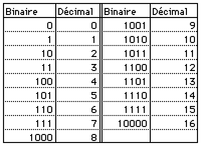
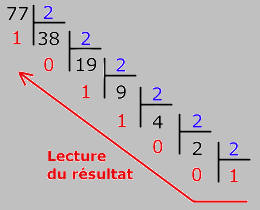

La base dix (écriture décimale) :
Les nombres que nous connaissons sont en base 10, c'est-à-dire que l’on utilise 10 symboles différents
(les chiffres arabes) pour représenter les nombres : 0, 1, 2, 3, 4, 5, 6, 7, 8, 9.
Lorsque tous les symboles (les 10 chiffres arabes) ont été utilisés, les nombres vont alors s'écrire avec deux symboles :
10, 11, 12, ...19, 20, ..., 90, ..., 99.
Lorsque toutes les combinaisons de deux symboles ont été utilisées, on va alors utiliser trois symboles : 100, 101, ...999.
Ainsi de suite, on augmente le nombre de symboles utilisés.
La base deux (écriture binaire) :
Pour la base 2 (le langage binaire), le principe pour représenter les nombres est le même que pour la base 10, sauf que l'on n'utilise que deux symboles au lieu de dix : 0, 1.
Lorsque tous les symboles ont été utilisés, les nombres vont alors s'écrire avec deux symboles : 10, 11.
Lorsque toutes les combinaisons de deux symboles ont été utilisées, on va alors utiliser trois symboles : 100, 101, 110, 111.
On utilise ensuite 4 symboles : 1000, 1001, 1010, 1011, 1100, 1101, 1110, 1111.
Ainsi de suite, on augmente le nombre de symboles utilisés comme pour la base 10.
Afin d'éviter de confondre un nombre écrit en base 10 avec un nombre écrit en base 2, on ajoute à la fin du nombre l'indice 2 pour indiquer qu'il
s'agit d'un nombre écrit en base 2. Exemple : 11010112.
Ci-dessous un tableau de correspondance entre la base 2 (binaire) et la base 10 (décimale) pour les nombres de 0 à 16.

Convertir un nombre de l'écriture décimale à l'écriture binaire :
Pour convertir un nombre de l'écriture décimale à l'écriture binaire, une méthode consiste à le diviser par 2
autant de fois que possible comme dans l'exemple ci-dessous.

Pour obtenir l'écriture binaire, on part du dernier quotient et on remonte la liste des restes.
L'écriture binaire de 77 est donc : 10011012.
Convertir un nombre de l'écriture binaire à l'écriture décimale :
Lorsque l'on utilise l'écriture décimale d'un nombre, le premier chiffre représente le nombre d'unités,
le second chiffre le nombre de dizaines, le troisième chiffre le nombre de centaines ...
Chaque chiffre est donc en correspondance avec une puissance de 10 comme dans l'exemple ci-dessous :
57016= 5 × 104 + 7 × 103 + 1 × 10 + 6
Pour transformer un nombre de la base 2 à la base 10, on utilise le principe précédent en remplaçant les puissances de 10
par des puissances de 2 comme dans l'exemple ci-dessous :
10011012 = 1 × 26 + 1 × 23 + 1 × 22 + 1 = 64 + 8 + 4 + 1 = 77 .
10011012 correspond donc à 77 en base 10.
Autre exemple : 11101102 = 26 + 25 + 24 + 22 + 21 = 64 + 32 + 16 + 4 + 2 = 118 .